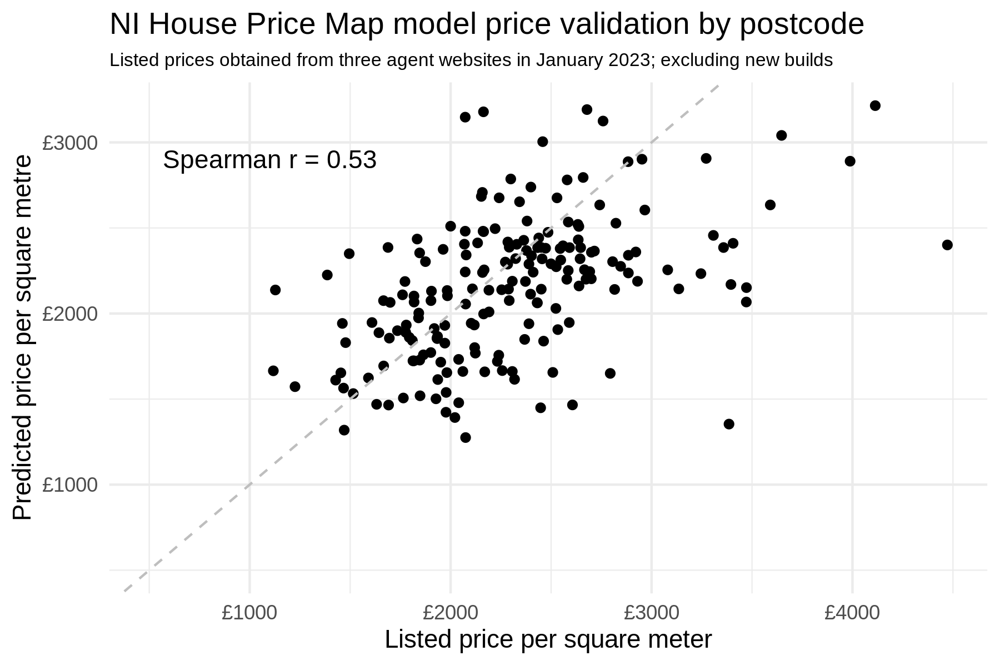
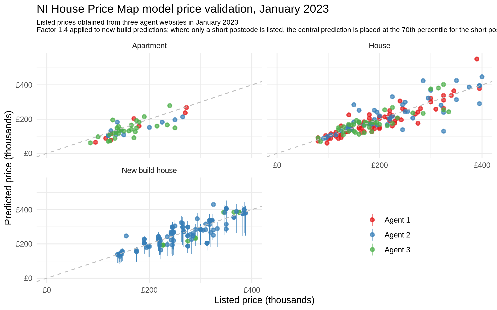

Data and modelling
Property data, including 2005 valuations, are from Land & Property Services. These values are updated to 2022 using NISRA's Northern Ireland House Price Index, using separate factors for houses and flats/apartments, but only at the granularity of local government district (LGD) level. Price levels and the high-level structure of the map are therefore representative of 2022, but small-scale patterns shown are from 2005, and may have changed slightly since then, where some areas within an LGD have become relatively more desirable than others.
Values for each postcode come from a simple statistical model of price per square metre, trained on the LPS data:
PricePerSquareMetre ~ HouseOrFlat + HasGarage + HasGarden + HasYard + HasOtherOutbuilding + Postcode
A coefficient is only calculated for postcodes with at least 10 properties in the LPS data, and a small spatial smoothing is applied to the results, weighted by the number of properties that were used in each postcode.
These postcode coefficients are what is shown in the map. These terms capture the value of the area itself, independent of the particular kinds of properties (size, etc.) that are found in the area.
Validation
The primary purpose of the map is to show the value of areas relative to each other, but for the affordability calculator to be useful, the price model must be accurately calibrated for 2022 asking prices. A sample of sales listings was obtained from three NI property agent websites in January 2023 and used to evaluate the model predictions. Property type, presence of garden, etc., and floor area were scraped from the listings, and model performance is reliant on the accuracy of this information.
The first plot shows listed against predicted price per square metre, for 205 listed properties, excluding new builds, averaged to postcode (most postcodes have only a single property in the January 2023 selection). Predictions are evenly spread across the 1:1 line, indicating that predicted prices are well-calibrated (not consistently too high or too low). The Spearman rank correlation coefficient r, which measures the accuracy of the ordering of postcodes by price per square metre, is 0.53, indicating low to moderate predictive skill; a more complex model would be required to increase this measure.

The second plot shows the predictions by listings agent and property type, and includes new builds, which mostly come from Agent 2. The model does not explicitly handle new builds, so an empirical scaling of factor of 1.4 is applied to predicted prices in this case. This captures quite well the premium that new build listings carry compared to resale properties; e.g., see here. When only a short postcode is listed for a new build, the 70th percentile of the predictions for that short postcode is used (and the 10-90th percentile range shown in the plot), because often new builds are part of a new long postcode that becomes more desirable than the average for that short postcode. Apartment price predictions, in this sample, are slightly too low.

The aim here is not to create the most accurate price model possible; this would require obtaining many more property characteristics, such as number of bedrooms, quality of fittings, and so on. The affordability calculator only indicates the price of a typical property of a given size in each postcode. The plots above show, however, that the price model performs reasonably well at separating postcodes by property value, and is well calibrated for 2022 prices.